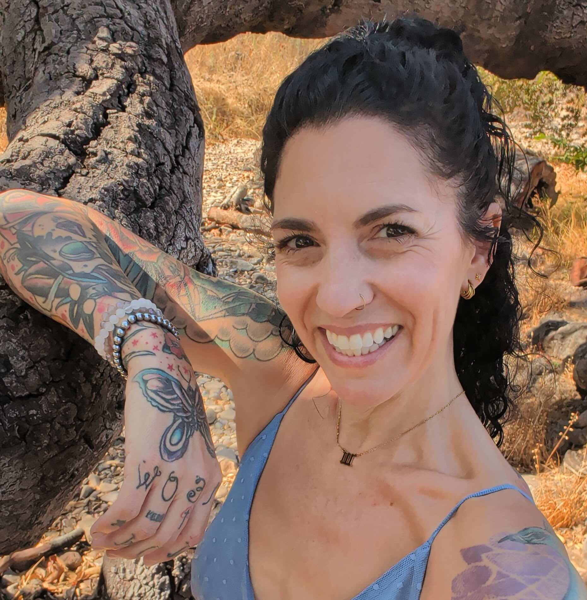

Designing digital products people can actually trust.
Techtuition audits and rebuilds digital products, content ecosystems, and AI interfaces — replacing dark patterns with interfaces that respect human attention and emotional agency.
I audit digital products, content ecosystems, and AI interfaces to eliminate dark patterns and design for genuine human trust.
If your product, onboarding flow, or AI interface has started to feel like it's working against the people using it rather than for them, this is where we start looking.
Together we'll map where trust breaks down, rebuild the flows and copy that caused it, and set your team up with principles that hold as the product grows.
A trust & clarity practice for teams building digital products and AI-driven experiences.
From one-off dark pattern audits to ongoing partnership through a launch, I tailor the engagement to where your product is and what's putting user trust at risk.
Book a free strategy callDesigning conversational interfaces, content taxonomies, and user flows that respect human cognitive limits and emotional agency.
Identifying predatory UI loops, artificial urgency, hidden fees, and coercive microcopy that erode brand credibility and user trust.
Structuring end-to-end product logic — from initial onboarding to help center documentation and AI chatbots — for absolute clarity, safety, and coherence.
Deiadora Blanche
The Intersection of Systems Design, Human Agency, and Emotional SafetyI am a product investigator, systems thinker, and information architect with over two decades of experience across business operations, digital transformation, and content strategy.
Where traditional design focuses solely on engagement and conversions, my work centers on human coherence and emotional safety. Long before product design prioritized user psychology, I spent 20+ years conducting deep ethnographic and neuro-phenomenological inquiry into how humans communicate, respond to threat, and navigate complex systems — from nonviolent communication and assertive interaction models to systemic emotional intelligence.
I see products non-linearly and multi-dimensionally — using a geodesic mindset to construct complex content architectures (including a 264-arc sentiment analysis taxonomy for B2B/B2C systems). I audit dark patterns and predatory microcopy with direct, unshakeable clarity, mapping digital flows that honor human agency while driving product integrity.

Product, Systems & Academic Rigor
- M.Sc. in Innovation & Entrepreneurship (HEC Paris)
- B.A. in Business Administration (Azusa Pacific University)
- 20+ Years Operations & Strategy: Digital transformation, product development, UX/UI content systems
- Advanced Taxonomy & AI Systems: Creator of a 264-arc sentiment analysis taxonomy for B2B/B2C intelligence
Human Dynamics & Phenomenological Research
- Neuro-Phenomenological Inquiry: 20+ years researching human behavior, threat response, and cognitive coherence
- Communication & Relational Systems: NVC, assertive communication, empathetic system dynamics
- Somatic & Physiological Architecture: Empirical study of physical, emotional, and mental self-regulation models
- Dark Pattern Investigation: Systematic auditing of predatory loops, coercive friction, and trust-eroding UI
Digital architecture isn't linear — it's a multi-dimensional geometry of human experience. When you design for emotional intelligence, you build products that users trust instinctively because the underlying structure respects their agency.
"[Placeholder — swap in a real client quote here.] Working with Techtuition, we finally saw where our onboarding was quietly working against new users. The rebuilt flow was clearer, calmer, and cut support tickets significantly in the first month."